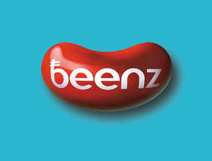
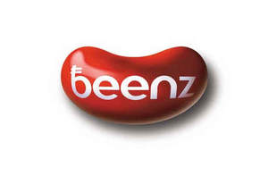

Trade Mark Journal No.2025/010 7 March 2025
UK00004157482 7 February 2025 (9,35,36,42)
Mark 1

Mark 2

- Class 9
- Cryptography software; Cryptocurrency hardware wallets; Security tokens [encryption devices]; Data mining software; Coin validators; Quantum computers; Downloadable software, namely virtual currency; Downloadable computer software applications for minting non-fungible tokens [NFTs]; Downloadable digital music files authenticated by non-fungible tokens [NFTs]; Downloadable digital image files authenticated by non-fungible tokens (NFTs); Downloadable cryptographic keys for receiving and spending crypto assets; Downloadable computer software for blockchain technology; Encoded cards; Encoded credit cards; Encoded gift cards; Encoded loyalty cards; Computer hardware; Computer software; Computer programmes; Computer game programmes; Smart cards; Encoded smart cards; Smart phones; Credit cards; SIM cards; Downloadable digital assets; Downloadable software for generating cryptographic keys for receiving and spending cryptocurrency; Encryption software; Computer software programs; Computer games software; Software; Downloadable computer software for managing cryptocurrency transactions using blockchain technology.
- Class 35
- Provision of an online marketplace for buyers and sellers of downloadable digital image files authenticated by non-fungible tokens [NFTs]; Provision of online marketplaces for buyers and sellers of goods and services which are authenticated by non-fungible tokens; Retail services relating to downloadable digital image files authenticated by non-fungible tokens [NFTs]; Promoting the goods and services of others by means of a loyalty rewards card scheme; Promoting the sale of goods and services of others by awarding purchase points for credit card use; Electronic data processing; Business data analysis; Data management; Management of customer loyalty, incentive or promotional schemes; Organisation, operation and supervision of sales and promotional incentive schemes; Organisation and management of business incentive and loyalty schemes; Providing market information in relation to consumer products; Market research and market analysis; Market research consultancy; Direct mail advertising; Direct marketing; Modelling for advertising or sales promotion; Business research; Sales promotion; Business administration services for processing sales made on the internet; Business administration services for the processing of sales made on a global computer network; On-line advertising and marketing services; Loyalty scheme services; Administration of loyalty rewards programs; Administration of membership schemes; Business strategy services; Credit card registration services; Maintenance of asset registers [for others].
- Class 36
- Financial trading of cryptocurrency; Financial exchange of cryptocurrency; Cryptocurrency exchange services; Virtual currency exchange; Currency trading; Virtual currency services; Virtual currency transfer services; Issuing of tokens of value; Issuing tokens of value; Issuance of tokens of value; Provision of prepaid cards and tokens; Issue of tokens, coupons and vouchers of value; Issuing of tokens of value in relation to customer loyalty schemes; Issuing stored value cards; Commodity exchange; Exchanging money; Electronic transfer of money; Electronic transfer of funds; Electronic money transfer services; Electronic banking; Issuing of tokens of value in relation to incentive schemes; Issuance of credit and debit cards; Credit card and debit card services; Issuing credit cards; Financial transactions via blockchain; Electronic funds transfer provided via blockchain technology; Banking; Internet banking; Crowdfunding; Payment processing services.
- Class 42
- Cryptocurrency mining; Mining of cryptocurrency; Electronic storage of cryptocurrency; Encryption, decryption and authentication of information, messages and data; Data authentication via blockchain; Data encryption and decoding services; Authenticating coins; Coin analysis [authentication] services; Blockchain as a Service [BaaS]; Quantum computing; Data mining; Development of virtual reality software; Hosting virtual environments; Providing online non-downloadable computer software for minting non-fungible tokens [NFTs]; User authentication services using blockchain technology; Hosting of e-commerce platforms on the Internet; Software as a service [SaaS] featuring software platforms for electronic gaming.
Nicolas De Santis